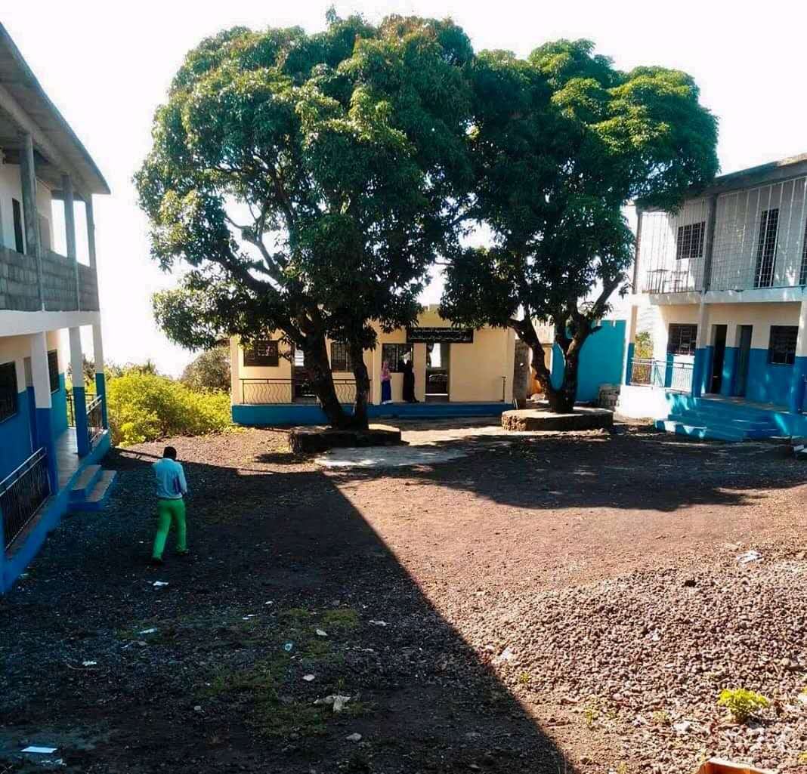

design-contorl-actions {
display: -webkit-box;
display: -ms-flexbox;
display: flex;
width: 100%;
-webkit-box-pack: center;
-ms-flex-pack: center;
justify-content: center;
-webkit-box-align: center;
-ms-flex-align: center;
align-items: center;
position: absolute;
.top:
-12px
.;
left: 0;
height: 100%;
z-index: 2;
}
first-party….scss:31715
* {

Our team has 8 members From differrent Countries
- Turatsinze Junior
- JENNIFER GOHUMPU
- lkhagvajav Bat-Erdene
- KADAFI SAID YOUSSOUF
- Poloko Felix Motoane
- Lutf Alhaj
- LUSETO SALOME
- ADBOULLAH ABDOMOHAMED NOMAN
The flash Group members presentation .
- Hello to everyone, I am Turatsinze Junior, and I was born in Uganda but raised in Rwanda.
I am the co-founder of the ConnectIn platform and the ConnectBook platform.
I have a background in IT because I have a Bsc in Information Technology.
I don't have much experience in software development, but I am eager to learn.
I am familiar with some programming languages, including HTML, CSS, and PHP as a backend..
- Hello to everyone, I am JENNIFER GOHUMPU, and I came from Malaysia.
I graduated in the Bachelor Degree of Electrical and Electronic Engineering From RMIT University,Melbourne,Australia.
I am currently work as a ELV System Project Assistance, mainly work in drafting, design and consulting for ELV System
and also coordinate worker and having site inspection.
I also have a little bit experience in IoT, Arduino and LoraWan Network, and willing to learn more in Software programming
- Hello everyone, I am lkhagvajav Bat-Erdene. I was born baynkhongor province.
I graduated from Otgontenger university with a bachelor degree in finance.
I worked as a cosmetics sales manager for a Japanese company.
Now I working marketing manager for a Mongolian national cosmetics company.
- Hi everyone, My name is KADAFI SAID YOUSSOUF , I came from The Comoros .
Actually i have a Bachelor Degree of Network Engineering From Hainan Tropical Ocean University ,China.
I have done my internship in Comoros Embassy in Beijing .
I have some experience in network cable and router configuration and i know a little bit about network security
- Anyway, I'm Poloko Felix Motoane from Botswana. I did BEng mechatronics and industrial instrumentation engineering..
I'm currently working as a Kiln Plant operator.
I have basic knowledge in various fields of electronics, instrumentation (plc, sensors, actuators, pneumatics, hydraulics), control
and mechatronics system..like fuzzy logic.
- Hello everyone, I am Lutf Alhajj, and I am from Yemen. I graduated from Zhejiang university with a bachelor degree in electrical engineering.
And I am currently working in the marketing department for a local company.
- Hello everyone, I am LUSETO SALOME, and I am from Zambia..
- Hello everyone, I am ADBOULLAH ABDOMOHAMED NOMAN, and I am from Yemen.
I graduated from Zhejiang university with a bachelor degree in electrical engineering.
Reglement sur le Comportement des etudient .
- L'uniforme scolaire basee sur ( chemise blache et pantalon noire )
- L'heur d'arrive des eleves dans le Compus ( 7h:oo )
- Les abscence sont toujour sanctionne
voici comment s'organise les salle d'examents .
Pour la classe de 3eme cliquer ici BEPC
Pour la classe de Terminal cliquer ici BAC
Le scolarite des etudiants
l'ecolage est base sur 500kmf/mois pour le Primmaire
Au college il est a 7500kmf/mois
Au Lycee il est fixe a 1000kmf/mois
Voici les activite de l'ecole